Progression Strategy
Weekly Shop Priorities
Unsure what to buy? If you’re new, use this guide to make sure you visit every shop worth checking 😀. Buy other items as needed.
| Shop | Item | Restock | Icon | Notes |
|---|---|---|---|---|
| Season Shop (low-grind shop) → Season Catch-up | Coin | Resets weekly | 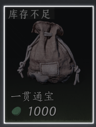 | Buy every week |
| Season Shop → Combat Progression | Howling Ore (current-tier enhancement material) | Resets weekly. Unbought stock carries over. | 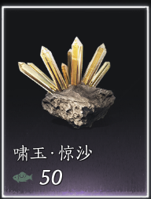 | Buy every week |
| Season Shop → Combat Progression | Golden Silk Coin Bag (Coin) | Resets weekly |  | The main way to spend your Stamina. |
| Season Shop → Combat Progression | Box of Commerce Coin | Resets weekly |  | Later on, you can skip this if you earn Commerce Coin from the Cricket Arena or trading in Kaifeng. |
| Season Shop → Combat Progression | Inner Way Note: Chest | Resets weekly |  | Buy every week |
| Season Shop → Combat Progression | Martial Art Notes | Resets weekly |  | Buy every week |
| Season Shop → Combat Progression | Mystic Skill Breakthrough Box | Resets weekly |  | Buy if you want to avoid grinding for Mystic Skill upgrades. |
| Season Shop → Gear Chests | Current-tier Gear Chest | Resets weekly |  | Buy when you have enough Jade Fish and need Gear. |
| Season Shop → Legendary Gear Exchange | Current-tier Retuning Stone | Resets weekly | 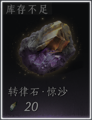 | Buy every week |
| Season Shop → Legendary Gear Exchange | Current-tier Legendary Melodic Stone | Resets weekly | 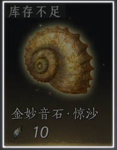 | Buy every week |
| Season Shop → Legendary Gear Exchange | Current-tier Legendary Gear Selection Chest | Restocks weekly up to a stock limit | 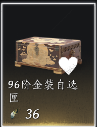 | Buy whenever you can |
| Season Shop → Profession Progression | Career Notebook | Resets weekly |  | Buy whenever you can. Level up your Healer or Scholar profession to unlock higher-tier medicines or talismans that improve your combat performance. |
| Season Shop → Appearance Exchange | Lingering Melody | Resets weekly | 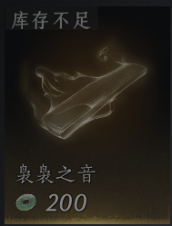 | Start buying these once you’re past the early game and have bought Morale Chant. |
| Social Shop → Wandering Paths Shop | Current-tier Arena Attunement Stone | Resets weekly | 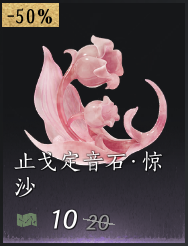 | Buy as needed. Skip this if you don’t play Arena (PvP) or Guild War. |
| Social Shop → Wandering Paths Shop | Current-tier Arena Re-attunement Stone | Resets weekly |  | Buy as needed. Skip this if you don’t play Arena (PvP) or Guild War. |
| Guild → Guild Shop | Resonating Melody | Resets monthly |  | Worth exchanging for. Use it to draw appearances. |
| Legacy Exchange | Mystic Skill Breakthrough Box | Resets weekly | 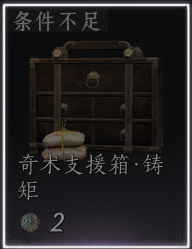 | Buy every week |
| Legacy Exchange | Current-tier Re-attunement Stone | Restocks weekly. Unbought stock carries over. | 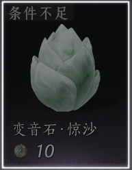 | Buy every week |
| Legacy Exchange | Inner Way Note: Chest | Resets weekly |  | Buy every week |
| Surething Shop | Coin | Resets weekly | 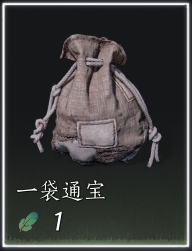 | Buy if you’re short on Coin. |
| Battle Pass Shop | Current-tier Retuning Stone | Resets weekly |  | Buy every week. Double-check the tier in the description before buying. I learned this the hard way because the shop carries Retuning Stones of every tier and lists them out of order. |
| Battle Pass Shop | Current-tier Re-attunement Stone | Resets weekly |  | Same as above |
| Battle Pass Shop | Mystic Skill Breakthrough Box | Resets weekly | 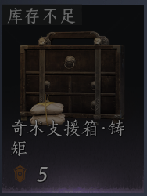 | Buy every week |
| Battle Pass Shop | Surething Feather | Resets with each Battle Pass | 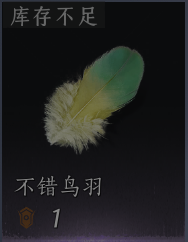 | Recommended. Exchange it for appearances or Coin at the Surething Shop. |
| Battle Pass Shop | Level Cap Token | Resets with each Battle Pass | 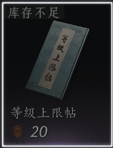 | Only worth buying if you’ve purchased the Battle Pass. |
| Shop → Special → Gift Packs | Coin | Resets weekly |  | Free. Remember to claim it. |
| Shop → Special → Item → Jianghu Treasures | Lingering Melody | Resets weekly | 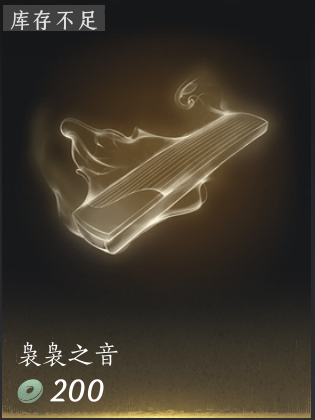 | Start buying these once you’re past the early game and have bought Morale Chant. |
| Shop → Draw → Essence of Heaven Shop | Lingering Melody | No stock limit | 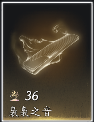 | Costs Essence of Heaven. You earn it in Draw when you spend Lingering Melody to draw appearances. |
| Shop → Draw → Essence of Earth Shop | Lingering Melody | Resets monthly |  | Costs Essence of Earth. You earn it in Draw when you spend Resonating Melody to draw standard appearances. |
| Shop → Draw → Essence of Earth Shop | Resonance Voucher | Resets monthly | 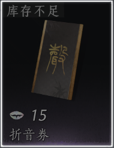 | Costs Essence of Earth. You earn it in Draw when you spend Resonating Melody to draw standard appearances. Use the voucher to save on appearances that cost Echo Beads (paid currency). |